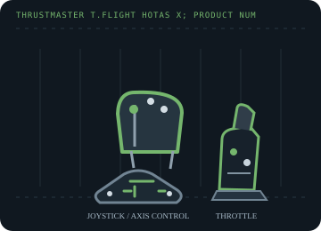

[ JOYSTICK CONTROLLERS // IDENTIFIED COMPONENT ]
Thrustmaster T.Flight HOTAS X
PC/PlayStation 3 flight-control set with a detachable throttle, twist rudder and a PC/console mode switch.

MODEL IDENTIFICATION: Thrustmaster T.Flight HOTAS X; product numbers include 2960703, 2960757, 2960768, 2962070, 2971003 and 4160543. Published family information does not establish the revision or condition of an individual unit; compare its label and included parts with the linked documentation.
Model specifications
| Catalog subcategory | Joystick controllers |
|---|---|
| Exact model / identifier | Thrustmaster T.Flight HOTAS X; product numbers include 2960703, 2960757, 2960768, 2962070, 2971003 and 4160543. |
| Axes and buttons | Pitch/roll stick axes, twist rudder, throttle lever and additional analog slider/control; trigger, action buttons and an eight-way POV hat. The stick and throttle can be separated for desk placement. |
| Physical interface | Wired USB; PC/PS3 selector changes console compatibility and control behavior. On PC, games can map the joystick and throttle as flight-control axes. |
| Sensors and protocol | Analog position axes plus digital buttons/POV switch; force feedback is not a feature of this model. Axis precision and dead zone should be tested on the specimen. |
| Power | USB bus-powered, with no external supply called out in the manufacturer manual. |
| Host OS and driver compatibility | PlayStation 3 and Windows PC in the selected mode. Thrustmaster lists a Windows 7/8/10/11 unified driver package; current game support remains title-specific. |
Setup and calibration
Set the physical selector to PC before connecting to the computer. Test all axes and buttons in the Windows controller panel, then calibrate the throttle and twist center before assigning simulator controls.
Keep the operating-system baseline calibration and in-game sensitivity/dead-zone settings separate. Record the OS, driver, firmware and game used to test each axis and button.
Preservation and service notes
Inspect the detachable throttle cable/locking arrangement, mode switch, twist centering and rudder range. Store both units together and note the switch position used in each host profile.
For an archive specimen, photograph the model label, note all included cables/adapters and distinguish directly observed behavior from published specifications.
References and support
- T.Flight HOTAS X support, manual and drivers — ThrustmasterManufacturer support lists the product numbers and current unified driver package.
- T.Flight HOTAS X user manual — ThrustmasterManufacturer's product manual for console/PC mode and setup.
Vendor support pages and manual downloads can change. Preserve the applicable manual and installer with a legacy host image, and verify the printed revision before service.